O Parque Nacional de Virunga, fundado em 1925, está localizado na República Democrática do Congo. Em 1960, na subestação de Ishango, situada dentro do parque, foi descoberto um osso da perna de um babuíno, datado de 20 000 anos, contendo entalhes representando números. Posteriormente conhecido como Osso de Ishango, o artefato é a mais antiga referência à contagem de números naturais de que dispomos até agora.
A necessidade de contar grupos de objetos e animais foi fundamental para a criação do número. A percepção numérica é ligada à evolução da sociedade, visto que surgiu em povos diferentes, de regiões e continentes distantes sem nenhum contato entre si.
Os egípcios já possuíam noção de frações. Na Grécia Antiga, os chamados números incomensuráveis (raízes não exatas) foram identificados e apareceram em problemas de Geometria.
O sistema decimal representado pelos algarismos indo-arábicos (0, 1, 2, 3, 4, 5, 6, 7, 8, 9) passou por muitas adaptações para chegar à configuração atual. A fim de compreender melhor a capacidade desse sistema, neste capítulo vamos classificar os conjuntos numéricos e entender as propriedades aritméticas de cada um deles.
- Você sabe qual é o conjunto numérico mais primitivo que usamos até hoje?
- Você acredita que os números estudados até aqui são suficientes para representar todas as situações da vida moderna?
Neste capítulo será abordada a competência C5
Conjunto dos números naturais: ℕ
Os primeiros números conhecidos por uma pessoa, em geral, são aqueles que ela conta com os dedos das mãos, para mostrar sua idade, a quantidade de brinquedos que possui e de amigos que conhece. Tais números são essenciais para as primeiras medidas, para a ideia de “mais” ou “menos”, bem como para saber a quantidade de elementos de um conjunto finito.
Considerando os números n e n
n e n+
n é o antecessor de n
n+
A fim de estudar situações como as descritas anteriormente, usamos os números naturais.
O conjunto dos números naturais, representado por ℕ, é definido por:
ℕ = {0, 1, 2, 3, 4, 5,...}
Os números naturais não nulos são representados por:
ℕ* = {1, 2, 3, 4, 5,...}
O símbolo * acompanhando o conjunto exclui o zero de seus elementos.
Propriedades dos números naturais
Duas operações são fechadas no conjunto dos naturais: adição e multiplicação, isto é, a soma e o produto de dois números naturais são um número natural. Vale notar que, na subtração ou na divisão de dois números naturais, não há garantia de que o resultado será um número natural.
Com relação a essas operações (adição e multiplicação), para todo a, b, c ∈ ℕ, destacam-se as seguintes propriedades:
Associativa da adição
(a + b) + c = a + (b + c)
Comutativa da adição
a + b = b + a
Elemento neutro da adição
a + 0 = a
Associativa da multiplicação
(a • b) • c = a • (b • c)
Comutativa da multiplicação
a • b = b • a
Elemento neutro da multiplicação
a • 1 = a
Distributiva da multiplicação em relação à adição
a • (b + c) = a • b + a • c
Conjunto dos números inteiros: ℤ
Com a evolução dos usos dos números para medidas, foram adotados referenciais que atingem o valor zero, como no caso da medição de temperatura em graus Celsius. Esse modelo foi proposto pelo astrônomo e físico sueco Anders Celsius (1701-1744), contendo uma escala de medida na qual 0 é o ponto de fusão do gelo à pressão normal e 100 é a temperatura de ebulição da água.
Sabendo que existem na natureza temperaturas menores que a de fusão do gelo, a construção dos números negativos se torna essencial para expressar valores abaixo do referencial inicial, no caso, o zero.
tcsaba/iStockphoto.com
Termômetro graduado na escala Celsius (°C) mostrando temperatura positiva de 25 °C na primavera e próxima de 0 °C no inverno. Observe os traços existentes abaixo do valor zero - são temperaturas representadas por números negativos.
tcsaba/Shutterstock.com
Podemos pensar, também, sobre o dinheiro existente em uma conta bancária. Um saldo igual a 0 significa que não há dinheiro em conta, os valores positivos indicam o quanto de dinheiro você possui e os números negativos representam uma dívida com o banco.
Matematicamente, a criação dos números negativos nos permite fazer a subtração de quaisquer dois números naturais. Haverá, portanto, uma resposta para a subtração 5 - 3 e outra, diferente, para 3 - 5; a primeira será o número inteiro positivo+2 e a outra o inteiro negativo -2.
Vale comentar que as crianças, logo que aprendem a operação de subtração sem ainda conhecer os números inteiros, tendem a dizer que o cálculo 3 - 5 está errado ou que essa operação não pode ser realizada.
O conjunto dos números inteiros, representado por ℤ, é definido por: ℤ={..., -4, -3, -2, -1, 0, 1, 2, 3, 4, 5,...}
Note que qualquer número natural também é inteiro. Logo, ℕ ⊂ ℤ.
Veja a seguir algumas notações importantes para certos subconjuntos de ℤ:
- ℤ*={..., -4, -3, -2, -1, 1, 2, 3, 4, 5,...}: conjunto dos inteiros não nulos.
- ℤ+={0, 1, 2, 3, 4, 5,...}=ℕ: conjunto dos números inteiros não negativos.
- ℤ+*={1, 2, 3, 4, 5,...}: conjunto dos números inteiros positivos.
- ℤ-={...,-4, -3, -2, -1, 0}: conjunto dos números inteiros não positivos.
- ℤ-*={...,-4, -3, -2, -1}: conjunto dos números inteiros negativos.
Considerando os números n e
n
+1 (com n
n e n +1 são chamados de inteiros consecutivos;
n é o antecessor de n +1;
n +1 é o sucessor de n.
Propriedades dos números inteiros
No caso dos números inteiros, as operações fechadas são: adição, multiplicação e subtração; isto é, a soma, a multiplicação e a subtração de dois números inteiros resultará em um número inteiro.
As propriedades citadas para os números naturais serão válidas para os inteiros, e é importante destacar que, a partir do conjunto dos inteiros, todo número tem seu simétrico ou oposto aditivo. Ou seja, para todo número a ∈ ℤ, existe um (único) -a ∈ ℤ, tal que:
a + (-a) = 0
Devido a essa propriedade, podemos definir a subtração de um inteiro a por um inteiro b como a soma de a com o simétrico de b, ou seja:
a - b = a + (-b)
O número 0 não é considerado positivo nem negativo e é um elemento nulo da seguinte multiplicação:
a • 0
Paridade dos números inteiros (par ou ímpar)
Um número inteiro é par se, e somente se, puder ser representado da forma 2n, com n ∈ ℤ.
Um número inteiro é ímpar se, e somente se, puder ser representado da forma 2n+1 , com n ∈ ℤ.
Exemplos:
O número 10 é par, pois pode ser
representado por 2 • 5 e 5 ∈
ℤ. O número -14 é par, pois pode ser representado por 2
• (-7) e (-7) ∈
ℤ.O número 5 é ímpar, pois pode ser representado por 2
• 2+1 e 2
Números primos
São os números inteiros positivos (ℤ*+) que possuem exatamente dois divisores positivos. Caso não seja primo, o número será denominado número composto.
Os oito primeiros números primos são:
2; 3; 5; 7; 11; 13; 17; 19
Vale destacar que o número 1 não é primo e que 2 é o único número primo par.
Conjunto dos números racionais: ℚ
Não é difícil compreender a insuficiência dos números inteiros. Em uma receita de bolo, por exemplo, pode ser necessário utilizar medidas representadas por números que não pertencem a esse conjunto. Veja a seguir:
Ingredientes para o bolo de cenoura

Victor Hugo Silva/iStockphoto.com
Massa:
3 cenouras médias (250 g);
4 ovos;
1/2 xícara (chá) de óleo;
2 e 1/2 xícaras (chá) de farinha de trigo;
2 xícaras (chá) de açúcar;
1 colher (sopa de fermento em pó).
Cobertura:
1 leite condensado (lata ou caixinha);
1 colher (sopa de manteiga);
1/2 xícara (chá) de chocolate em pó.
Sabendo que a divisão não é fechada no conjunto ℤ, como poderíamos representar, na linguagem matemática, o ingrediente “2 e
1/2 xícaras (chá) de farinha de trigo”, ou seja, 2+
Essas situações acontecem em vários contextos em que os inteiros são usados para medir e mostram a necessidade de novos tipos de números: os fracionários.
Acredita-se que a ideia de representar frações ocorreu no Egito Antigo, pela necessidade de dividir as terras cultivadas à beira do Rio Nilo. Em determinada época do ano, o nível do rio subia e inundava parte desses terrenos. Após as cheias, as demarcações precisavam ser refeitas sem alterar as partes de cada lote, e as medidas dessas terras muitas vezes não cabiam em um número inteiro. A carência de representação de números como o quociente 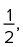 motivou a construção do conjunto dos números racionais.
O conjunto dos números racionais é composto de todos os
elementos que podem ser representados por uma fração de inteiros, sendo o
denominador diferente de zero.

Note que qualquer número inteiro também é racional. Logo,
Veja a seguir algumas notações importantes para certos subconjuntos de ℚ:
- ℚ*: conjunto dos números racionais não nulos.
- ℚ+ : conjunto dos números racionais não negativos.
- ℚ+* : conjunto dos números racionais positivos.
- ℚ- : conjunto dos números racionais não positivos.
- ℚ*- : conjunto dos números racionais negativos.
Assim, o racional , com a ∈ ℤ e b ∈ ℤ*, é denominado número fracionário, com a sendo seu numerador e b, seu denominador.
As frações , com a ∈ ℤ+ e
b ∈ ℤ*+, podem receber duas classificações:
Próprias: quando o numerador é
menor do que o denominador, ou seja, a
Exemplos:  .
.
Impróprias: quando o numerador é
maior do que o denominador, ou seja, a
Exemplos:  .
.
As frações impróprias também podem ser transformadas nos chamados números mistos, que misturam sua parte inteira com a fracionária.
O número é um exemplo
disso. Na divisão de 13 por 8, o quociente 1 é a parte inteira da unidade de referência, e o resto 5 é a parte considerada da segunda unidade de referência. Observe:
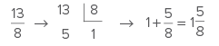
O que significa a fração 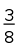?
O denominador indica em quantas partes o todo foi dividido (unidade de referênci; no caso, em oito partes iguais. O numerador indica as partes do todo que devem ser consideradas (em verde); no exemplo, são três partes.
O que significa a fração 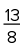?
O denominador é a unidade de referência e indica em quantas partes o todo foi dividido. O numerador indica as partes do todo que devem ser consideradas. Neste caso, como o numerador supera o denominador, devemos considerar duas unidades de referência para realizar a divisão em oito partes iguais.
Frações equivalentes
As frações equivalentes representam a mesma “medida”, tendo denominadores e numeradores distintos. Observe a seguinte figura:
Frações equivalentes representam a mesma parte do todo.
O retângulo está dividido em 3, 6 e 12 partes, respectivamente. No
entanto, as frações que representam as medidas destacadas correspondem à mesma
quantidade. Então, é possível fazer a simplificação das frações e 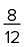 para obter
formas mais simples, até chegar à fração irredutível,  .
.
A fração é denominada irredutível quando o maior divisor comum do numerador e denominador for 1, ou seja, quando os números forem primos entre si.
1
IFPE 2018 Pedro, um aluno do curso de Almoxarife do IFPE - Cabo, em seu estágio, deparou-se com a seguinte situação: no almoxarifado, encontravam-se 20 caixas de lápis, cada caixa com 30 lápis. Ele precisava mandar 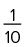 dessas caixas para o laboratório de matemática. Ao abrir as caixas que chegaram ao laboratório, o professor de matemática colocou dos lápis sobre as mesas, guardando o restante dos lápis no armário.
Nessas condições, podemos afirmar que o professor guardou, no armário do laboratório, um total de
- 10 lápis.
- 20 lápis.
- 30 lápis.
- 40 lápis.
- 50 lápis.
Resolução:
Alternativa: A
• 20=2 caixas (60 lápis)
60- 50=10 (lápis guardados no armário)
2
UPE 2018 Um ciclista estabeleceu a meta de percorrer a distância entre duas cidades durante três dias. No primeiro dia, percorreu um terço da distância. No dia seguinte, mais um terço do que faltava. Que fração da distância ele necessita percorrer no terceiro dia para atingir sua meta?
- 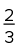
- 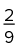
-

Resolução:
Alternativa: D
Seja d a distância entre as duas cidades. Se no primeiro dia ele percorreu e no dia seguinte um terço de 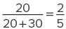, então ele deverá percorrer no terceiro dia 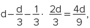 ou seja, 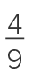 da distância entre as duas cidades.
Propriedades dos números racionais
As operações fechadas no conjunto dos racionais (não nulos) são: adição, multiplicação, subtração e divisão. Isto é, a soma, a multiplicação, a subtração e a divisão de dois números racionais (sem o zero no denominador) sempre resultarão em um número racional.
As propriedades citadas para os naturais e inteiros serão válidas para os racionais, e é importante destacar, que a partir do conjunto dos racionais não nulos, todo número tem seu inverso (inverso multiplicativo). Ou seja, para todo 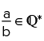 existe (um único) 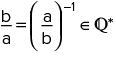 tal que:
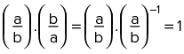Representação decimal
Todo número racional pode ser representado por um número decimal, obtido na divisão de a por b.
Decimais exatos
São números racionais que, logo após o processo de divisão, possuem resultado exato. Nos exemplos a seguir, em algum momento a divisão obtém resto 0 - podemos dizer que chega a um “fim”. Em outras palavras, a representação decimal apresenta um número finito de casas não nulas após a vírgula e, por isso, é chamada de decimal exato.
Exemplos:
O número inteiro 7 pode ser representado por uma fração de inteiros, (logo, é racional) e, com a divisão, possui a seguinte representação decimal: 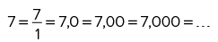 (decimal exato).
O número admite uma representação decimal finita (decimal exato), pois 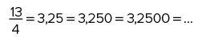
Para representar os números decimais exatos em frações de inteiros basta seguir três passos.
Primeiro: excluir a vírgula do número e obter o numerador da fração;
Segundo: representar o denominador por uma potência de 10, ou seja, 10n, com n sendo o número de casas depois da vírgula;
Terceiro: simplificar a fração obtida até atingir uma fração equivalente na forma irredutível.
Exemplos:
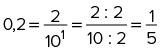
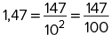
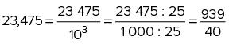
Dízimas periódicas
Dízimas são números obtidos pela razão de dois inteiros, mas que, no processo de divisão, nunca chegam a um resto 0. Ou seja, não apresentam um fim e representam uma divisão não exata - uma quantidade infinita de casas não nulas à direita da vírgula.
Nessa sequência de infinitas casas decimais, pode ocorrer que um
conjunto de dígitos se repita periodicamente e, por isso, recebe o nome de dízima
periódica. Trata-se de um número racional e pode ser representado por
, com b
Por exemplo, o número 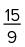 tem representação decimal, no entanto, possui infinitas casas não nulas depois da vírgula (dízima periódica):
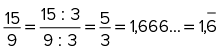
Quando a parte decimal do número for formada apenas pelos dígitos do período, teremos uma dízima periódica simples, e quando a parte decimal apresentar números que não compõem o período, estamos tratando de uma dízima periódica composta.
Exemplos:
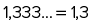
Note que o 3 é período, pois se repete infinitamente. Para obter a representação na forma de fração de inteiros, chamamos o número de x e, com isso, temos: x=1,333...
Como o período possui um dígito, multiplicamos a equação por 10¹ e do novo resultado subtraímos o anterior:
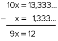Portanto, 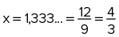.
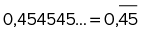
Nesse caso, o 45 é o período e podemos escrever x
Como o período possui dois dígitos, multiplicamos esse valor por 10² =100, e subtraímos o novo resultado pelo anterior:
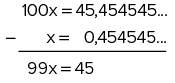Portanto, 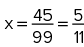.
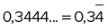
Esse período é composto de apenas um dígito e o mesmo processo dever ser mantido, ou seja, chamamos o número de x e multiplicamos por 10¹.
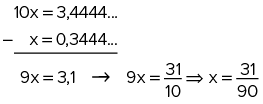Portanto, 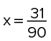.
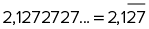
O período é composto de dois dígitos e, após ser chamado de x, deve ser multiplicado por 10²=100.
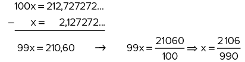Portanto, 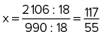.
Aprofundando
A regra para determinar a fração geratriz de uma dízima periódica simples consiste em dividir o período que possui n algarismos por um número que possui n dígitos 9. Observe alguns exemplos.
-

- 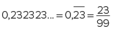
- 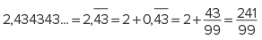
Usando um raciocínio similar, a regra para determinar a fração geratriz de uma dízima periódica composta consiste em considerar, junto com o período, a parte decimal formada pelos dígitos que não estão no período e realizar a subtração desse número pela parte decimal não periódica. O resultado obtido será o numerador da fração. O denominador será um número formado por uma quantidade de 9 igual ao número de dígitos do período seguido por um número de 0 igual ao número de dígitos não periódicos. Observe alguns exemplos.
- 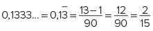
- 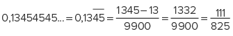
- 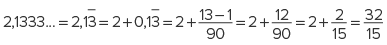
Conjunto dos números irracionais: ℝ - ℚ
No século VI a.C. era estabelecida, na Grécia Antiga, a chamada Escola Pitagórica. A Matemática e a Filosofia dos pitagóricos influenciaram permanentemente o pensamento ocidental. O lema de tal filosofia pode ser traduzido como “Os números governam o mundo”; no entanto, esses números eram apenas os inteiros positivos e as razões formadas por eles.
Um problema geométrico abalou fortemente essa filosofia. Em algum momento, os pitagóricos perceberam que, ao adotar uma medida inteira para o lado de um quadrado, seria impossível obter a medida da diagonal deste quadrado através de outros inteiros positivos ou de uma fração do lado do quadrado.
Observando a figura, pelo teorema de Pitágoras, temos:
d2=x2
d2=2x2
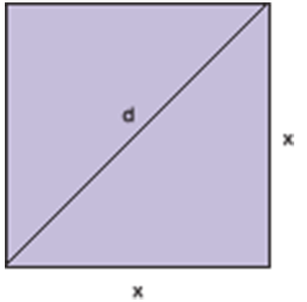Essa igualdade não é satisfeita para d e x, ambos racionais, independentemente do tamanho do lado do quadrado.
Podemos perceber que, se o lado do quadrado vale 1, sua diagonal mede 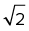. A descoberta do número irracional indicado por provocou grande consternação nos pitagóricos, pois ia de encontro aos preceitos matemáticos da escola.
A partir desse problema, surgiu um novo marco na história da Matemática: a criação dos números irracionais. Essa classe de números propiciou a obtenção de medidas de grandezas antes consideradas incomensuráveis, ou seja, impossíveis de se relacionarem por meio de uma razão de números inteiros.
O conjunto dos números irracionais é composto de números que, na sua forma decimal, são formados por dízimas não periódicas, indicados da seguinte maneira: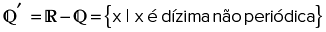
Como construir um segmento que mede em um segmento numérico?
Podemos observar que, em uma régua comum ou qualquer outro segmento numérico, não encontramos medidas como . No entanto, sabemos que um quadrado com lado 1 tem diagonal . Se construirmos em uma folha de papel um quadrado com lado 1 e uma diagonal, teremos uma figura parecida com a mostrada ao lado.
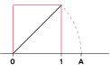Após observar a figura, converse com seus colegas e, com a ajuda de um compasso, procurem na reta o ponto A, que forma um segmento cujo comprimento mede .
Lembre-se de que os números irracionais não podem ser representados como uma razão de inteiros!
Exemplos:
Os irracionais algébricos =1,41421356237... e 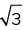 =1,73205080756... são obtidos de algum polinômio de coeficientes racionais e que possuem representação decimal com infinitas casas não periódicas.
Os irracionais transcendentes
Considere n ∈ ℕ* e a ∈ ℕ. Se 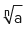 não é inteiro, então é irracional.
Exemplos:
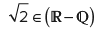

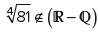,
pois  e 3 é inteiro.
e 3 é inteiro.
Propriedades dos números irracionais
Sobre as operações que envolvem os números irracionais, existem as seguintes propriedades:
- A soma, a diferença, a multiplicação e o quociente entre dois números irracionais terão resultado racional ou irracional.
- A soma, a diferença, a multiplicação e o quociente entre um número irracional e um racional (diferente de zero) terão resultado irracional.
Conjunto dos números reais: ℝ
Com a união de todos os números racionais e irracionais, obtemos o chamado conjunto dos números reais, formado por todos os números com representação decimal: decimais exatos; dízimas periódicas e dízimas não periódicas.
ℝ={x | x é número racional ou irracional}
Observe a seguir um diagrama com os conjuntos numéricos, que traz exemplos de elementos de cada conjunto.
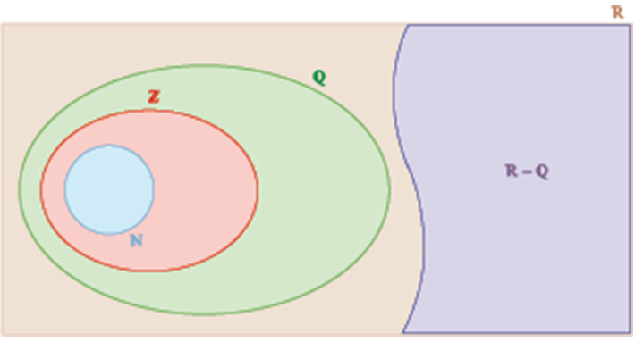Reprodução
A história da Matemática
Direção: David Okuefuna, 2008.
Classificação indicativa: livre.
Disponível em: http://p.p4ed.com/HTOIP.
Nesse documentário de quatro episódios, acompanhamos a história da Matemática e a construção das ideias ao longo dos séculos.
Confira algumas notações importantes para certos subconjuntos de ℝ:
- ℝ*: conjunto dos números reais não nulos.
- ℝ+: conjunto dos números reais não negativos.
- ℝ*+: conjunto dos números reais positivos.
- ℝ-: conjunto dos números reais não positivos.
- ℝ-* : conjunto dos números reais negativos.
Propriedades dos números reais
As operações fechadas no conjunto dos reais são: adição, multiplicação, subtração e divisão; isto é, a soma, o produto, a diferença e o quociente de dois números reais são números reais. Vale ressaltar que, no caso da divisão, o divisor é um real não nulo.
Eixo real
Todos os números reais podem ser associados a pontos em uma reta orientada. Essa representação será muito importante nos estudos adiante e é denominada reta real ou eixo real.
Para a construção dessa reta, cada número será associado a um único ponto da reta, e cada ponto da reta será associado a um único número real. É uma maneira de representar o conjunto dos números reais, simbolizado por ℝ.
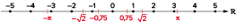Note que, para a construção da reta, o 0 deve ser tomado como referencial e, assim, cada ponto deve ser associado a um número real, que representa sua distância em relação à origem. Todos os números terão seu oposto, o qual terá a mesma distância da origem. Na reta apresentada anteriormente, todos os números estão representados com seu oposto ou simétrico.
Intervalo real
Um subconjunto dos números reais, determinado por limites a e
b, com a
| Representação geométrica | Representação algébrica |
|---|---|
| 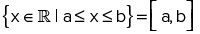 | |

|
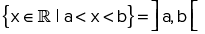 |

|
|
Vale destacar que:
- a “bola cheia” (●) em um dos extremos dos limites do intervalo indica que o número associado pertence ao intervalo;
- a “bola vazia” (○) em um dos extremos dos limites do intervalo indica que o número associado não pertence ao intervalo;
- quando não há um limite inferior ou superior, a representação
algébrica deve ser aberta e indicada por -
∞ ou∞ , respectivamente.
3
Sendo A=
- A ⋃ B
- A ⋂ B
- A - B
Resolução:
Portanto, A ⋃ B= [2; 7[.
Portanto, A ⋂ B= ]3; 5].
Portanto, A - B=[2; 3].
Portanto, .
1
Determine dois números naturais primos cuja soma é 91.
2
UFPR 2017 Rafaela e Henrique participaram de uma atividade voluntária que consistiu na pintura da fachada de uma instituição de caridade. No final do dia, restaram duas latas de tinta idênticas (de mesmo tamanho e cor). Uma dessas latas estava cheia de tinta até a metade de sua capacidade e a outra estava cheia de tinta até de sua capacidade. Ambos decidiram juntar esse excedente e dividir em duas partes iguais, a serem armazenadas nessas mesmas latas. A fração que representa o volume de tinta em cada uma das latas, em relação à sua capacidade, após essa divisão é:
3
IFCE 2016 Uma fração é equivalente a . Se a soma do numerador com o denominador dessa fração é 25, o produto do numerador pelo denominador dessa fração vale
- 6
- 96
- 54
- 24
- 150
4
Coloque na forma de uma fração irredutível os seguintes números racionais:
- 0,4
- 3,5
- 12,35
5
Enem PPL Em um jogo educativo, o tabuleiro é uma representação da reta numérica, e o jogador deve posicionar as fichas contendo números reais corretamente no tabuleiro, cujas linhas pontilhadas equivalem a 1 (um unidade de medida. Cada acerto vale 10 pontos. Na sua vez de jogar, Clara recebe as seguintes fichas:
Para que Clara atinja 40 pontos nessa rodada, a figura que representa seu jogo, após a colocação das fichas no tabuleiro, é:


6
Dados os intervalos, determine:
- A ⋃ B
- B ⋂ D
- D
- C - (A ⋃ C) ⋂ B
- B
- (A ⋂ C) - (A ⋂ B) ⋃ (A ⋂ C)
7
Unicamp 2019 A representação decimal de certo número inteiro positivo tem dois algarismos. Se o triplo da soma desses algarismos é igual ao próprio número, então o produto dos algarismos é igual a
- 10
- 12
- 14
- 16
1
Fuvest 2016 A igualdade correta para quaisquer a e b, números reais maiores do que zero, é
2
Unicamp-SP 2018 Considere três números inteiros cuja soma é um número ímpar. Entre esses três números, a quantidade de números ímpares é igual a
- 0 ou 1.
- 1 ou 2.
- 2 ou 3.
- 1 ou 3.
3
Unesp A soma de quatro números é 100. Três deles são primos e um dos quatro é a soma dos outros três. O número de soluções existentes para este problema é
- 3.
- 4.
- 2.
- 5.
- 6.
4
Fuvest 2017 Sejam a e b dois números inteiros positivos. Diz-se que a e b são equivalentes se a soma dos divisores positivos de a coincide com a soma dos divisores positivos de b. Constituem dois inteiros positivos equivalentes:
- 8 e 9.
- 9 e 10.
- 10 e 12.
- 15 e 20.
- 16 e 25.
5
IFPE 2018 Chamamos uma fração de unitária se o numerador for igual a 1 e o denominador for um inteiro positivo, por exemplo: . Os antigos egípcios costumavam trabalhar com frações que poderiam ser obtidas como soma de frações unitárias diferentes, por exemplo: .Por esse motivo, esse tipo de fração, que pode ser obtido por soma de frações unitárias distintas, é conhecido por “frações egípcias”. O uso das frações egípcias facilitava as contas e comparações, especialmente num mundo onde não havia calculadoras.Encontre uma fração, F, equivalente à soma:

6
FGV-SP Sueli colocou 40 mL de café em uma xícara vazia de 80 mL, e 40 mL de leite em outra xícara vazia de mesmo tamanho. Em seguida, Sueli transferiu metade do conteúdo da primeira xícara para a segunda e, depois de misturar bem, transferiu metade do novo conteúdo da segunda xícara de volta para a primeira. Do conteúdo final da primeira xícara, a fração correspondente ao leite é
7
Uerj O segmento XY indicado na reta numérica a seguir está dividido em dez segmentos congruentes pelos pontos A, B, C, D, E, F, G, H e I.
Admita que X e Y representem, respectivamente, os nú-meros e . O ponto D representa o seguinte número:
8
CMRJ 2018 O valor da expressão é
- 4,666666...
- >4,252525...
- 4,333333...
- 4,25
- 4,5
9
Cefet-MG Um grupo de alunos cria um jogo de cartas em que cada uma apresenta uma operação com números racionais. O ganhador é aquele que obtiver um número inteiro como resultado da soma de suas cartas. Quatro jovens ao jogar receberam as seguintes cartas:
| 1ª carta | 2ª carta | |
|---|---|---|
|
Maria |
||
|
Selton |

|
|
|
Tadeu |
||
|
Valentina |
O vencedor do jogo foi:
- Maria.
- Selton.
- Tadeu.
- Valentina.
10
Fuvest-SP O número real
x, que satisfaz 3
- x é irracional.
- .
- x • 102 000000 é um inteiro par.
Então,
- nenhuma das três afirmações é verdadeira.
- apenas as afirmações I e II são verdadeiras.
- apenas a afirmação I é verdadeira.
- apenas a afirmação II é verdadeira.
- apenas a afirmação III é verdadeira.
11
PUC-SP Além das informações dadas por Calvin na tira abaixo, considere que os “quatro paus” aos quais ele se refere correspondem a R$ 400,00.

Supondo a ideia de Calvin aceita por seu pai e contabilizados todos os conceitos que ele obteve ao longo do ano em que foi feita a proposta, observou-se que o número de conceitos “D” era o quíntuplo do de “B” e o número de conceitos “C” excedia o de “A” em 10 unidades. Nessas condições, se a quantidade de conceitos “A” que Calvin tirou era um número par, então, para obter exatamente os “quatro paus” por ele pretendidos, o total de conceitos “B” que ele tirou era um número
- primo.
- maior que 17.
- quadrado perfeito.
- ímpar.
- menor que 10.
12
Uece 2018 A quantidade de números inteiros positivos n que satisfazem a desigualdade: é
- 2.
- 3.
- 4.
- 5.
13
Enem digital 2020 Um jogo pedagógico é formado por cartas nas quais está impressa uma fração em uma de suas faces. Cada jogador recebe quatro cartas e vence aquele que primeiro consegue ordenar crescentemente suas cartas pelas respectivas frações impressas. O vencedor foi o aluno que recebeu as cartas com as frações:
A ordem que esse aluno apresentou foi

14
Fuvest 2020 Uma agência de turismo vendeu um total de 78 passagens para os destinos: Lisboa, Paris e Roma. Sabe-se que o número de passagens vendidas para Paris foi o dobro do número de passagens vendidas para os outros dois destinos conjuntamente.Sabe-se também que, para Roma, foram vendidas duas passagens a mais que a metade das vendidas para Lisboa. Qual foi o total de passagens vendidas, conjuntamente, para Paris e Roma?
- 26
- 38
- 42
- 62
- 68
15
UFSJ-MG Sejam r1 e r2 números racionais quaisquer e s1 e s2 números irracionais quaisquer, é incorreto afirmar que
- o produto r1 • r2 será sempre um número racional.
- o produto s1 • s2 será sempre um número irracional.
- o produto s1 • r1 será sempre um número irracional.
- para r2
≠ 0, a razão será sempre um número racional.
16
EPCar-MG Considere os seguintes
conjuntos numéricos ℕ, ℤ,
Das alternativas abaixo, a que apresenta elementos que pertencem aos conjuntos A, B e D, nesta ordem, é
- -3; 0,5 e

- -5 e 2
- 3 e
17
IFSUL-RS 2016 (Adapt.) Dados os conjuntos e , então A - B é:
18
UEG-GO 2016 Dados os conjuntos e a intersecção entre eles é dada pelo conjunto
19
UFJF-MG Define-se o comprimento de cada um dos intervalos [a,b], ]a, b] e [a, b[
como sendo a diferen-ça (b − a). Dados os intervalos M=
- 1.
- 3.
- 5.
- 7.
- 9.
20
UFF-RJ Segundo o matemático Leopold Kronecker (1823-1891), “Deus fez os números inteiros, o resto é trabalho do homem”.Os conjuntos numéricos são, como afirma o matemático, uma das grandes invenções humanas. Assim, em relação aos elementos desses conjuntos, é correto afirmar que:
- o produto de dois números irracionais é sempre um número irracional.
- soma de dois números irracionais é sempre um número irracional.
- entre os números reais 3 e 4, existe apenas um número irracional.
- entre dois números racionais distintos, existe pelo menos um número racional.
- diferença entre dois números inteiros negativos é sempre um número inteiro negativo.